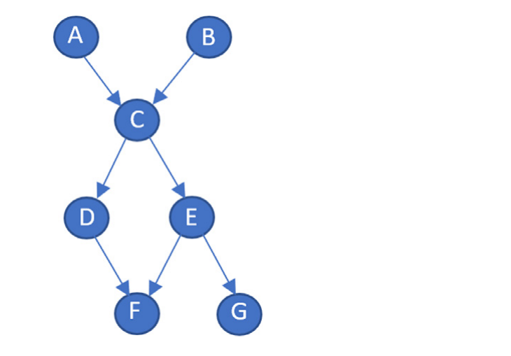
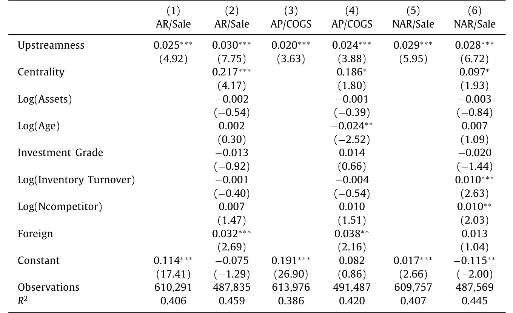
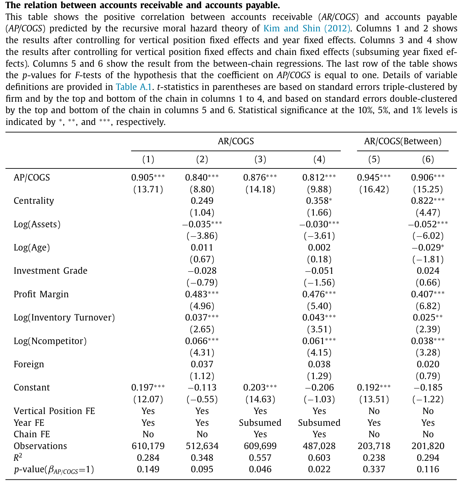
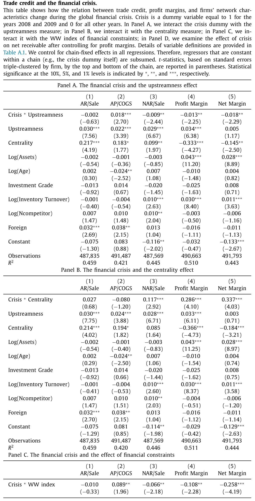
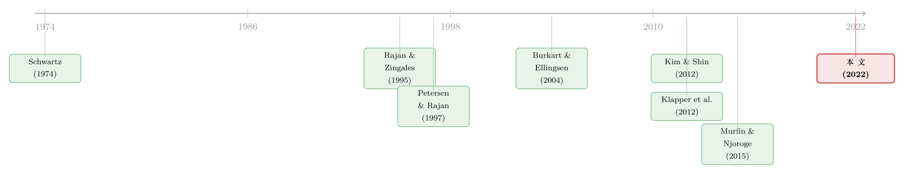

谁欠谁的钱，藏在它离餐桌有多远
本文读的是 Gofman & Wu (2022, Journal of Financial Economics)：作者把 20 多万条供应链拼了出来，发现一家公司在生产链上越「往上游」（离最终消费品越远），它给客户垫的钱越多、从供应商那里赊的也越多、净赊出去的更多——尽管这些上游公司的融资能力明明更差。这个「上游度效应」更像 Kim & Shin (2012) 递归道德风险理论的产物，而不是传统「融资优势」理论能解释的。
1 一个被忽略了三十年的问题
贸易信用（trade credit）是个老话题：供应商把货先发给你，账期 30 天、60 天，钱过一阵子再付——这就是供应商给客户的一笔贷款。它在资产负债表上的分量大得惊人。Rajan and Zingales (1995) 早就算过，美国非金融企业的应收账款平均占总资产的 17.8%，应付账款占 15%，都是短期负债占比（7.4%）的两倍还多。
那么一个自然的问题是：银行和资本市场明明是更专业的放贷人，为什么企业偏要互相赊账？过去三十多年的文献几乎都在回答这一个问题，而且回答的方式高度一致——盯住一对供应商和客户，看这一根「链接」上钱是怎么流的。从 Schwartz (1974) 第一个提出「融资优势」（financing advantage）开始，到 Petersen and Rajan (1997)、Burkart and Ellingsen (2004)，大家争论的都是：这一对买卖关系里，供应商凭什么比银行更适合放贷？
但真实世界里没有哪家公司只是「供应商」或只是「客户」。它对上游是客户，对下游是供应商，自己嵌在一条从原材料一路通向超市货架的长链条里。它一手收着别人的赊账，一手又把货赊给别人。只盯着一根链接，你永远看不到这家公司在整条链上的位置。 而 Gofman 和 Wu 这篇文章真正想说的，恰恰就是这句话——位置，决定了谁欠谁的钱。
2 先得把「链条」拼出来
要谈位置，先得有链条。这正是本文的第一个贡献，而且是个方法论上的硬功夫。
作者用 FactSet Revere 关系数据库（目前最全的企业级供应商—客户关系库）抓出所有的「谁供货给谁」，再匹配到 Compustat North America 拿财务数据。然后他们做了一件别人没做过的事：把这张大网，拆成一条条具体的供应链。
具体怎么拆？把整个生产网络写成一个 n×n 的邻接矩阵 A，A_{i,j}=1 表示公司 i 供货给公司 j。再定义一个「终点」集合——消费品生产者，经验上就是 GICS 代码 25（非必需消费品）和 30（必需消费品）这两个行业的公司，它们直接把东西卖给最终消费者。对于不在终点集合里的每一家公司，用 Bellman-Ford 算法找出它通向任意一个终点的最短路径，只保留距离最短的那条；再把那些「本身就是更长链子的一段」的子链（subchain）全部删掉，免得把一条链的局部错当成整条链。
最后得到一个 203,722 条「未被嵌套的最短距离供应链」的样本，由 5600 多家非金融公司构成，链长从 2 到 10 不等。

Figure 1: provides an example of a production network
这套方法最漂亮的地方，是它给出了一个干净的「上游度」（upstreamness）定义：
直白说：一家公司的上游度，就是它离「餐桌」有几步之遥。最终消费品公司的上游度是 0；它的直接供应商是 1；供应商的供应商是 2……如图 1 所示，在那个七家公司、六条链的例子里，F、G 在底层（位置 0），D、E 是 1，C 是 2，A、B 是 3。
上游度是个全局的网络度量，不只取决于你的直接买卖伙伴，还取决于你间接的上下游。一家造石油钻探设备的公司，技术上根本不可能直接供货给汽车厂——所以「链接的缺失」本身，就泄露了一家公司在生产流程里的技术位置。更妙的是：一家公司可以同时属于很多条链，但它在同一时点的上游度是唯一的。
3 上游的公司，反而是「债主」
有了位置，戏就开场了。作者盯住三个贸易信用指标：
- 应收账款 / 总收入 —— 你给出多少贸易信用（the provision）；
- 应付账款 / 销货成本（COGS）—— 你用了多少贸易信用（the use）；
- （应收 − 应付）/ 总收入 —— 你净给出多少（the net provision）。
主要发现一句话就能讲完：三个指标全都随上游度上升而上升。 越往上游，公司既赊得多、又被赊得多，净应收也更高。作者管这叫「贸易信用里的上游度效应」（the upstreamness effect in trade credit）。
量级有多大？在基准回归里，垂直位置每上升一格：
- 应收-销售比上升
3.0个百分点； - 应付-COGS 比上升
2.4个百分点； - 净应收-销售比上升
2.8个百分点。
这分别相当于各自标准差的 30%、8.3% 和 28%——不是「统计显著但小到没意义」的那种，而是经济上实打实的一大块。单变量、多变量回归都成立。

Table 4: presents the results from both the univari-
但真正让人挑眉的，是下面这句话：这些上游公司，按标准的融资约束指标衡量，融资能力明明更差。 它们离资本市场更远、现金流更不稳，却偏偏是净给出贸易信用最多的那群——是整条链上的「债主」，而不是「债户」。
这就尴尬了。如果贸易信用真是「谁融资能力强谁来放贷」，那应该是下游那些更接近消费者、现金流更稳的大公司去给上游垫钱才对。现实正好拧着来。
接着，一个自然的追问是：这个上游度效应，是不是被什么别的东西调节着？作者发现，它对越赚钱的公司越弱、在越长的链条里越弱（长链往往也更赚钱）。同时，贸易信用和盈利能力之间存在正相关，而且这种正相关对下游公司比对上游公司更强。换句话说，钱和利润在链条上的交织，远比「一根链接」的故事丰富。
4 反转：到底是不是「融资」在驱动？
到这里，故事本可以收尾在「上游公司是债主」。但作者不满足，他们要追问一个更狠的问题：驱动这一切的，到底是不是融资动机？
他们把视角从「链内」拉到「链间」（cross-chain）。结果出现了第一层反转：越赚钱、越中心的链条，里面的公司确实净给出更多贸易信用——这支持融资优势理论（有钱的人放贷，合理）。可同一批公司也收到更多贸易信用。给得多，也拿得多。
然后是更耐人寻味的第二层。作者用上游度和各变量的秩相关（rank correlation）去刻画一条链内部「融资能力的分布」——盈利能力越往下游越高、还是越往上游越高？答案有点出人意料：那些「上游弱、下游强」的链条，反而提供了更多的贸易信用（无论毛额还是净额）。 而且在更赚钱的链条里，应付账款比率更高，尤其当利润集中在下游时——这暗示着，有市场势力的下游公司，可能在通过贸易信用从供应商身上「抽租」。（关于「下游凭议价能力压榨上游」这条暗线，可参见《互补品的暗线：当电池涨价，芯片厂的股票为什么会先动？》里产业链上下游的传导逻辑。）
这些拼在一起，指向一个不太「金融」的结论：融资动机，恐怕不是本文样本里贸易信用的主驱动力。
那主驱动力是什么？作者把目光投向了一个几乎被所有人忽略的理论。
5 一个能解释「上游」的理论：递归道德风险
绝大多数贸易信用理论，都说不清「为什么偏偏是上游公司有更多贸易信用」——因为它们根本没有「上游」这个维度，全在一根链接里打转。作者说，他们所知唯一把贸易信用和公司在供应链里的位置联系起来的，是 Kim and Shin (2012) 的递归道德风险（recursive moral hazard）理论。
这个理论的直觉很美：在一条生产链上，每一家公司都可能「偷懒」（shirking），而上游公司一旦偷懒，要等很久、经过层层加工，才会在最终产品上暴露出来——延迟越长，越难追责，偷懒的诱惑就越大。所以要让上游公司不偷懒，就必须给它更强的「不偷懒激励」，而这种激励恰恰体现为更高的利润和更多的净应收。于是上游公司「被设计成」债主。
这个理论还甩出一个非常硬的预测：当应收和应付都用生产成本（COGS）来标准化、并控制住垂直位置的固定效应后，把应收对应付做回归，系数应该等于 1。直觉是，一家公司从上游赊进多少、就该向下游赊出多少，激励才能沿着链条「递归」地传下去——借进一块，贷出一块。
作者把两个预测都拿来检验。第一个预测——「不偷懒激励随离最终消费的距离上升」——他们不光用垂直位置，还自己设计了一个「产出到达最终消费者的预期时间」的替代度量，两种度量下都得到强支持。第二个预测更漂亮：他们把应收对应付（都用 COGS 标准化）做回归，系数估计落在 0.81 到 0.95 之间，在大多数设定里与理论预测的 1 在统计上无法区分。

Table 10
一块钱赊进来，几乎一块钱赊出去。这种「近乎一比一」的对应，很难用「谁融资强谁放贷」来解释，却正是递归道德风险理论的核心刻画。这是全文最有说服力的一击。
6 危机这台「压力测试」
理论描述的是一个稳态均衡。那么一旦来个大冲击，链条会怎么抖？2008–2009 金融危机提供了一台天然的压力测试机。
逻辑链条是这样的：Gofman et al. (2020) 预测上游公司对总量冲击的暴露更大。果然，作者发现 2008–2009 年间，上游公司的利润率比下游掉得更狠；与「利润下滑削弱了上游提供净贸易信用的能力」这个猜想一致，上游公司的净应收在危机中确实下降了。
有意思的是另两条：中心公司（central firms）的利润率跌得更少，危机中反而多提供了净贸易信用；而更受融资约束的公司利润率跌得更多，净提供随之减少。把这些合起来看，作者得到一个温和但重要的判断——融资能力在危机时期对贸易信用的决定作用，比平时更大。 平时是激励在主导，危机时融资才真正顶上来。

Table 11
这也正是本文对「融资优势」这场争论给出的态度：不站队，两边都喂证据。一边，更赚钱、更中心的链条提供更多净贸易信用、危机里更抗跌的公司也提供更多——支持融资优势；另一边，更上游的公司明明融资更紧却提供更多净贸易信用、且应收应付近乎一比一——指向融资之外的机制。证据是「mixed」的，作者也老实承认了。
7 文献脉络
把这条线捋一捋，能看清本文站在哪儿。
最早，Schwartz (1974) 提出融资优势理论：供应商在某些方面比银行更适合放贷。此后几十年，文献沿着各种「优势」展开——信息优势、抵押品清算优势、关系优势——但几乎都困在一根供应商-客户链接里。Petersen and Rajan (1997) 用实证发现「信贷渠道更好的公司提供更多贸易信用」，支持融资优势；Burkart and Ellingsen (2004) 则从「实物投入难被挪用」给出一个理论解释。

然后，一批研究开始挑战这套叙事：Klapper et al. (2012) 和 Murfin and Njoroge (2015) 发现，那些融资能力极强、根本不缺钱的大公司，照样大量地向供应商赊账——这让「融资优势」显得力不从心。与此同时，危机文献（Love et al. 2007；Costello 2020）揭示了贸易信用在银行信贷收缩时的「流动性传染」作用。
真正与众不同的是 Kim and Shin (2012)：他们第一个把贸易信用放到整条供应链的层面上，用道德风险解释上游为什么该是债主。Gofman et al. (2020) 则从资产定价角度用上了「垂直位置」这把尺子。而本文，正是把 Kim-Shin 的理论第一次拉到 20 万条真实供应链上做系统检验的那一篇——它既是方法论的奠基（怎么把链拼出来、怎么量上游度），也是这场「融资 vs. 激励」之争里一份扎实的新证据。
8 评论与延伸（Q&A + 研究方向）
(a) 几个可能的疑问
Q：「上游度」和已有的 input-output 上游度指标（如 Antràs 等的 upstreamness）是一回事吗？
不完全是。宏观文献里的上游度多基于行业级的投入产出表，是连续的、行业层面的。本文的上游度是公司级的、整数的「最短距离」，直接数你到消费品行业隔了几层供应商-客户链接。好处是干净、可解释、且对同一公司唯一；代价是它只刻画「最短链」，不追踪一家公司所属的全部链条。
Q：一家公司同属很多条链，会不会污染结果？
这是作者最在意的稳健性问题，他们称之为「高互联度」（high-interlinkedness）公司。应对办法是用加权回归——一个观测按它所属链条数的倒数加权——结果非常相似。而且上游度效应在不同互联度的公司/链条间没有显著差异，也不是被链顶或链底的公司驱动的。
Q：会不会只是行业差异？比如重工业天生账期长？
控制了行业固定效应后，上游度效应依然高度显著。作者还用垂直位置的虚拟变量做回归，发现这个效应基本是单调的——一格一格往上走，而不是某个行业的跳变。
Q：应收对应付「系数等于 1」，是不是只是会计恒等式凑出来的？
不是恒等式。应收和应付是资产负债表两边独立的科目，一家公司完全可以赊进很多却赊出很少（净债户），或反过来。理论预测的是控制垂直位置 FE 后两者近乎等量变动，这是个有内容的实证约束；
0.81–0.95的估计与 1 无法区分，是对 Kim-Shin 的强支持，而非机械结果。
Q：那融资优势理论是被推翻了吗？
没有。作者的态度是「证据 mixed」。链间层面、危机时期都能看到融资优势的影子；只是在解释「为什么上游公司是债主」这个核心事实上，递归道德风险更顺。两种机制更像在不同时点、不同维度上各管一段。
Q：样本只有 35,167 个公司-年、5623 家公司，会不会太偏向大公司？
是有这个倾向——能进
FactSet Revere和Compustat双重匹配的，多是上市的大中型公司。这恰恰也是本文相对早期「小公司贸易信用」文献的价值：它说明大公司之间同样在大规模互相赊账，且呈现清晰的上游度结构。但要把结论推广到私营小企业，需谨慎。
(b) 几个可能的研究问题与提案
1. 贸易信用的上游度结构，会不会定价进公司债利差？
【经济故事】上游公司净应收高、对总量冲击暴露大、危机里利润和净贸易信用一起塌——这听起来就是一个系统性风险敞口。如果债券市场理性，上游公司的信用利差里应该有一块「上游度溢价」。【可行性】中。把本文的上游度匹配到
TRACE公司债交易和评级数据，控制传统信用风险变量后看利差，识别可借助危机或行业冲击做事件研究。难点是上游度与规模、行业高度相关，需要细致的固定效应。
2. 外资持有人会不会改变一家公司在链上的「债主」角色？
【经济故事】外资股东往往带来更硬的信息披露和更便宜的外部融资。若融资能力上升，一家上游公司是否会少给净贸易信用、转而把激励留给链条本身？这能把「融资 vs. 激励」之争放到一个准实验里。【可行性】中。用指数纳入（如 MSCI 重新分类）作为外资持股的外生冲击，DiD 看公司净应收随上游度的斜率是否变化。数据上需把外资持股、上游度、贸易信用三者匹配，样本会变小。
3. 上游度能不能预测贸易信用的「流动性传染」方向？
【经济故事】Costello (2020) 发现银行信贷收缩会顺着供应链传染。本文给了一把现成的「方向尺」——冲击从上游往下游、还是下游往上游传，应该取决于谁是净债主。【可行性】高。把银行信贷冲击（如某主力银行受损）匹配到供应链，按上游度分组看净应收的动态响应，识别清晰、数据可得。
4. 「近乎一比一」在不同议价格局下会不会破裂？
【经济故事】Kim-Shin 预测系数为 1，但若某段链条由强势下游主导（本文也发现下游可能抽租），递归激励可能被议价力扭曲，系数偏离 1。【可行性】中。用行业集中度或客户集中度刻画议价格局，看应收-应付回归系数如何随之偏移。需要构造可信的议价力代理。
5. 链条长度内生于贸易信用吗？
【经济故事】本文把链长当作（部分）外生来分组，但企业纵向一体化的决策本身可能就受贸易信用成本驱动——赊账太贵的环节会被并购掉。【可行性】低到中。要把并购/纵向一体化事件与上游度、贸易信用联动，识别很难，但若能找到税收或反垄断的外生冲击，会很有意思。
9 我的判断
这篇文章最大的贡献其实有两个层次。方法上，它把「供应商-客户关系」这团乱麻，第一次系统地织成了可分析的供应链，并给出一个唯一、可解释的公司级上游度——这把尺子本身就值得后来者反复用。实证上，它把一个几乎被遗忘的理论（递归道德风险）从黑板上拉下来，用 20 万条真实链条证明「上游即债主、应收应付近乎一比一」，这是对贸易信用文献长期「单链接视角」的一次真正扩容。
要说对识别的担忧，我有三点。其一，上游度终究是相关性驱动的描述，不是因果——文章诚实地用了「stylized facts」这个词，但读者别把斜率读成处理效应。其二，样本偏向能双重匹配的大公司，外推到私营部门要小心。其三，「近乎一比一」虽漂亮，但它和融资优势理论的边界，文章自己也承认是模糊的——两种机制各喂一半证据，谁主谁次仍悬而未决。
我接下来最想看到的，是把这把「上游度尺子」接到价格上去：如果上游公司真的扛着更大的系统性贸易信用风险，那么它的股票、它的债券、乃至它供应商的信用利差，都该留下痕迹。本文把「数量」（谁欠谁多少）讲透了，下一步该有人去把「价格」补上。
参考文献
Burkart, M., Ellingsen, T. (2004). In-kind finance: a theory of trade credit. American Economic Review 94(3), 569–590.
Costello, A.M. (2020). Credit market disruptions and liquidity spillover effects in the supply chain. Journal of Political Economy 128(9), 3434–3468.
Gofman, M., Wu, Y. (2022). Trade credit and profitability in production networks. Journal of Financial Economics 143(2), 593–618.
Kim, S.-J., Shin, H.S. (2012). Sustaining production chains through financial linkages. American Economic Review 102(3), 402–406.
Klapper, L., Laeven, L., Rajan, R. (2012). Trade credit contracts. Review of Financial Studies 25(3), 838–867.
Love, I., Preve, L.A., Sarria-Allende, V. (2007). Trade credit and bank credit: evidence from recent financial crises. Journal of Financial Economics 83(2), 453–469.
Murfin, J., Njoroge, K. (2015). The implicit costs of trade credit borrowing by large firms. Review of Financial Studies 28(1), 112–145.
Petersen, M.A., Rajan, R.G. (1997). Trade credit: theories and evidence. Review of Financial Studies 10(3), 661–691.
Rajan, R., Zingales, L. (1995). What do we know about capital structure? Some evidence from international data. Journal of Finance 50(5), 1421–1460.
Schwartz, R.A. (1974). An economic model of trade credit. Journal of Financial and Quantitative Analysis 9(4), 643–657.
Whited, T.M., Wu, G. (2006). Financial constraints risk. Review of Financial Studies 19(2), 531–559.